NuBloom Fractal NuBloom: Fractal 是使用 Lindenmayer 系统生成的 8888 种独特花卉的集合，该系统迭代地重写字符串以创建分形图案。该系列将在购买时自动在 OpenSea 上铸造，并将成为第一代 NuBloom 花。每一代人
Nuclear Nerds of the Accidental Apocalypse 由于飞行员诺曼·F·波拉斯基（以及他放错地方的奶酪牛排）的判断失误，我们很遗憾地通知您，2021 年 12 月 15 日，美国从北美发动了一次意外的核打击
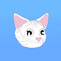 Nudie Community Official Nudies 是由 Hayley Elsaesser 设计的 816 个特征组成的 10,000 个 NFT 的集合。 每个 NFT 都拥有专有的 IP 权利和 Nudie 社区的会员资格。成员资格包括功能实用的实用程序和不断增长的社区驱动功
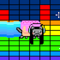 Nyan Aoki 每个 Nyan Aoki NFT 将奖励所有者一件免费的 Dim Mak 系列限量版 Aoki x Nyan Cat 夹克（兑换期约为活动结束后 6-8 周） Nyan Aoki NFT - 常见问题（FAQ） ▶ 什么是 Nyan Aoki？ Nyan Aoki 是一
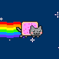 Nyan Cat V4 Nyan Cat（官方）NFT - 常见问题（FAQ） ▶ 什么是 Nyan Cat（官方）？ Nyan Cat (Official) 是一个 NFT (Non-fungible token) 集合。存储在区块链上的数字艺术品集合。 ▶ 有多少 Nyan Cat
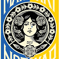 Obey Make Art Not War Ukraine 我很高兴地宣布将于2022 年 9 月 25 日至 2023 年 7 月 23 日在德克萨斯州达拉斯当代艺术中心举办我的首次个展！我的展览 Backward Forward 解决了美国和整个地球面临的许多
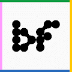 Ocarinas ▶ 什么是陶笛？ Ocarinas 是一个 NFT（不可替代令牌）集合。存储在区块链上的数字艺术品集合。 ▶ 存在多少 Ocarinas 代币？ 总共有 1,626 个 Ocarinas NFT。目前，495 位所有者
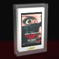 Occhiali Neri NFT by Dario Argento 为了庆祝惊险大师的伟大回归，Dario Argento 和 Vision Distribution 创建了第一个限量编号版的独特#588 NFTs集合，可以访问独家内容，与演员和 Black Ray 眼镜一起在房间
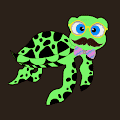 Ocean-Project-Turtles Ocean Project Turtles 是一个全新的集合，包含 10,000 个独特的 NFT，它们生活在 Polygon 区块链上——No Gas。每只海龟都是手绘的，由算法随机生成并 100% 归您所有。它不能被复
OCM Dessert 新的 NFT 集合提供 Monkeyverse 的成员资格、在 DAO 中投票资助 web3 和社区项目，以及访问任务和香蕉经济。Karma 艺术由我们获得奥斯卡奖提名的团队以及加密和技术资深
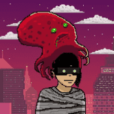 OctoHedz Reloaded OctoHedz 入侵地球，而每个人都忙着“登月”，派 888 个创世纪 Octos 渗透，传播 $INKz 并收集情报以进行全面入侵。 $INKz 是由Genesis 集合和进化源被动生成的，以到达元
OctoPeeps OctoPeeps 是生活在多边形区块链上的 1,000 个 NFT 的集合，它是由 90 多种资产以手绘、编程方式和随机生成的。所有 OctoPeeps 都存储为 ERC-721 令牌 OctoPeeps 是 Polygon 区块链上 1,000 个 NFT 的集合，这些 NFT
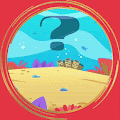 Octopus Shifter Lovers Club Octopus Shifter Lovers Club 统计 创建于 4 个月前 2,222 代币供应 3% 费用 过去 7 天内没有售出八达通 Shifter Lovers Club。 Octopus Shifter Lovers Club NFT - 常见问题（FAQ） ▶ 什么是八达通爱好者俱乐部？ Octopus
Oddstronauts 1.0 Oddstronauts 源于两个不太可能的朋友成为兄弟 - Ryan Dylan Selkirk (Aylo) 和 Owen Khang 的愿景，他们着手创新 nft tech/web3 的世界。在大学学习计算机动画后，两人开始了他们在音乐行业创作和指导音
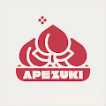 Official ApeZuki ApeZuki 是 10,000 只忘记猿在 Azuki 中的猿的集合，作为 Azuki 特征中的退化猿 Apezuki是10,000只忘记猿在Azuki的猿的集合。我们是退化级别 11/10。不
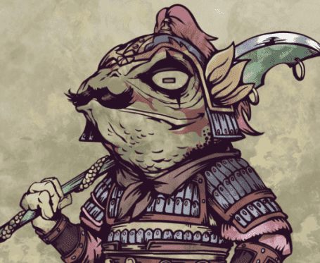 Official Chief Toad Chief Toad 是 10,000 个独特的 Chief Toad NFT 的集合。您的 Chief Toad NFT 兼任 G-Link 的会员资格，让 VIP 可以访问 G-Link 的 gameverse 平台。 特权包括在游戏世界中创建公会的能力，享受更高的游戏内收入，
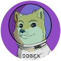 Official DogeX 狗狗币正在走向一美元！现在，DogeX 已经到来，为狗狗币征服 NFT 空间。DogeX 以执行火星任务的一万个可收藏角色的形式将 Doge 传奇变为现实。NFT
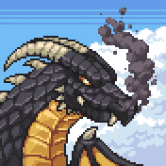 Official Dormant Dragons Dormant Dragons 的主要目标是创建一款引人入胜、有回报且可持续的 Play to Earn (P2E) 2D MMORPG 视频游戏。玩家将完全拥有他们所有的资产，允许他们在我们的市场上与其他人进行交易
Official Fraternity Apes Party Fraternity Apes 是 HighKey 的第一个 NFT 项目，专门提供名人赠品，过去 3 年一直致力于名人联系、交易和活动。FAP 将为所有相关人员举办大型名人派对和社交活动。 HighKey Enterprises LLC 与
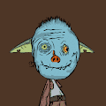 Official Hobgoblintown 哥布林的天敌。10,000 名大地精 PFP 将加入他们，而不是与地精作战。免费薄荷，没有路线图，没有不和谐，一些实用程序。效用是 Opensea 销售收入的 50% 将用于
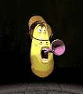 Official Larva Aniverse NFT 通过自己的 PFP NFT 作为角色参与到 角色 元宇宙“Aniverse”中，来自各种作品的角色聚集在一起。 我们提供游戏、NFT、Staking、治理参
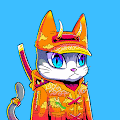 Official Neko Zamurai 7,777 名 Nekos 应征入伍，为伟大的元宇宙战争做准备。当 Nekos 开始征服 Metaverse 时，许多战斗正在等待。 官方 Neko Zamurai NFT - 常见问题（FAQ） ▶ 什么是官方 Neko Zamurai？ 官
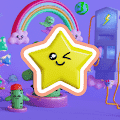 Official Plowieverse 当三位飘渺的农民从天而降时，进化发生了，他们在世界各地种植了最初的 8,888 颗 Plowie 种子。随着种子的生长和孵化，世界变成了一个多彩、可爱和快乐的世界，不
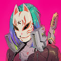 Official Project Shura 2500年，位于东京的一个日本政府秘密项目被泄露，5500名改装过的士兵准备部署。启动修罗计划。Project Shura 是由一位名叫 Akihiro 的才华横溢的日
Official SeKira SのKIRA 是一个由 3,201 个女性角色组成的 NFT 系列，其灵感来自日本女性的优雅、力量和魅力。每个 SのKIRA NFT 的持有者都将成为我们社区——神社的成员
Official Skate Goats Tre翻转宇宙飞船，不可能像山羊一样包裹月球和着陆！ 哦等等……我们是山羊！ 好吧，我们是……你是吗？！ 加入这个由 10,000 只山羊组成的 Skatopia 社区，这些山羊
OFFICIAL Timeless Ape Club Timeless Ape Club 集合了 5555 只独特的、通过算法生成的 Timeless Ape，将全球的手表狂热者联合起来。我们的核心使命是通过我们独有的 NFT 收藏架起物理世界和虚拟元宇宙的桥
OG Portal NFT OG Portal 集合由 969 个黄金 PFP NFT 组成，让持有者可以展示他们作为 EktaChain 网络早期支持者的身份。 它还为即将推出的 Portal NFT 合集提供免费铸币，以确保将 Portal 节点设备免费运送
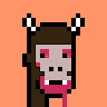 OG PVNK FAMILY Gerhard Human 是来自开普敦的当代艺术家、动画师和漫画创作者。他的作品曾在 MTV、Booooooom、Juxtapoz、Hi-Fructose 和 Vimeo Staff Picks 上
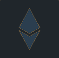 OGCards OG卡统计 创建于 12 个月前 330代币供应 10% 费用 过去 7 天内没有售出任何 OGC 卡。 OGCards 是跟踪以前持有者的 NFT 每个 NFT 都会显示持有它的 OG 100% 链上- 免费铸造 - 总供
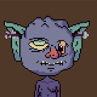 OGRES.wtf OGRES.wtf NFT - 常见问题（FAQ） ▶ 什么是 OGRES.wtf？ OGRES.wtf 是一个 NFT（Non-fungible token）集合。存储在区块链上的数字艺术品集合
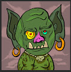 OgresHood.wtf 食人魔在这里 gruu helpgre groeblin eetgr 精灵。食人魔不像精灵格力。 OgresHood.wtf NFT - 常见问题（FAQ） ▶ 什么是 OgresHood.wtf？ OgresHood.wtf 是一个 NFT (Non-fungible token) 集合。存储在区块链上
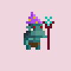 ogreswamp.wtf ogreswamp.wtf 统计 创建于 3 个月前 3,333 代币供应 7.5% 费用 过去 7 天内没有出售 ogreswamp.wtf。 ogreswamp.wtf NFT - 常见问题（FAQ） ▶ 什么是 ogreswamp.wtf
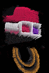 OGs by JakNFT x Kotegawa OGs 是限量版 PFP 系列，将 JakNFT 和 Hiroji Kotegawa 的风格融合成一种全新的艺术形式。 OG 是使用结合了故障、动画、雕刻和 3D 建模的特殊工艺创建的。 仅存在 369 个 OG。每个 OG 都
Oilys Pebbles Oilys Pebbles 是 Logan Larkin 和 localmachine 以 2000 Pebbles 为特色的集合。通过 GAN 处理使用 100 个原始手绘鹅卵石来创建一系列随机生成的稀有油石鹅卵石。 Oilys Pebbles NFT - 常见问题（FAQ） ▶ 什么是油
Okay Doodles Yacht Club Okay Doodles 游艇俱乐部统计数据 创建于 3 个月前 5,166 代币供应 0.01% 费用 过去 7 天没有售出 Okay Doodles 游艇俱乐部。 Okay Doodles 游艇俱乐部 NFT - 常见问题 (FAQ) ▶ 什么是 Okay Doodles 游艇俱乐部？ Okay Doodles
Okay Red Pandas 没有路线图，没有不和谐，只有毛茸茸的尾巴。10k 只小熊猫会没事的。CC0 以太坊项目，由社区控制。 Okay Red Pandas NFT - 常见问题（FAQ） ▶ 什么是 Okay Red Pa
OkayAzukis OkayAzukis NFT - 常见问题（FAQ） ▶ 什么是 OkayAzukis？ OkayAzukis 是一个 NFT（非同质代币）集合。存储在区块链上的数字艺术品集合。 ▶ 有多少 OkayAzukis 代币？ 总共
Olympian Elements 有时你必须退后一步才能看到更大的图景 Olympian Elements NFT - 常见问题（FAQ） ▶ 什么是奥运元素？ Olympian Elements 是一个 NFT（非同质代币）集合。存储在区块链上的数字艺术
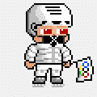 Olympic Babiz Official OLYMPIC BABIZ 是一种像素艺术创作 这是White Metaverse的NFT项目。 BABIZ 是一种独特的奖励结构 会给持有者带来欢乐。 为纪念奥运会而生 认识 1638 BABI